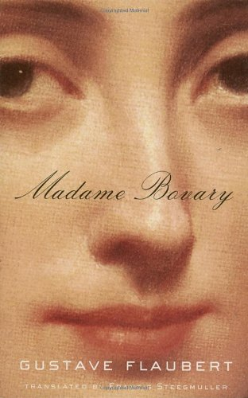

| No. | Book Cover | Book Title | Author | Summary | Price | |
| 1 |
|
Anna Karenina | Leo Tolstory | Anna Karenina tells of the doomed love affair between the sensuous and rebellious Anna and the dashing officer, Count Vronsky. Tragedy unfolds as Anna rejects her passionless marriage and must endure the hypocrisies of society. Set against a vast and richly textured canvas of nineteenth-century Russia, the novel's seven major characters create a dynamic imbalance, playing out the contrasts of city and country life and all the variations on love and family happiness. | $183.52 |
|
| 2 |  | Madame Bovary | Gustave Flaubert | For daring to peer into the heart of an adulteress and enumerate its contents with profound dispassion, the author of Madame Bovary was tried for "offenses against morality and religion." What shocks us today about Flaubert's devastatingly realized tale of a young woman destroyed by the reckless pursuit of her romantic dreams is its pure artistry: the poise of its narrative structure, the opulence of its prose (marvelously captured in the English translation of Francis Steegmuller), and its creation of a world whose minor figures are as vital as its doomed heroine. | $465.23 |
|
| 3 |
|
War and Peace | Leo Tolstory | Epic in scale, War and Peace delineates in graphic detail events leading up to Napoleon's invasion of Russia, and the impact of the Napoleonic era on Tsarist society, as seen through the eyes of five Russian aristocratic families. | $40.00 |
|